Dong Wei, Huaijiang Sun, Xiaoning Sun (corresponding author), and Shengxiang Hu
Nanjing University of Science and Technology, Nanjing, China {csdwei,sunhuaijiang,sunxiaoning,hushengxiang}@njust.edu.cn
Abstract. Predicting accurate future human poses from historically observed motions remains a challenging task due to the spatial-temporal complexity and continuity of motions. Previous historical-value methods typically interpret the motion as discrete consecutive frames, which neglects the continuous temporal dynamics and impedes the capability of handling incomplete observations (with missing values). In this paper, we propose a novel implicit Neural Representation method for the task of human Motion prediction, dubbed NeRMo, which represents the motion as a continuous function parameterized by a neural network. The core idea is to explicitly disentangle the spatial-temporal context and output the corresponding 3D skeleton positions. This separate and flexible treatment of space and time allows NeRMo to combine the following advantages. It extrapolates at arbitrary temporal locations; it can learn from both complete and incomplete observed past motions; it provides a unified framework for repairing missing values and forecasting future poses using a single trained model. In addition, we show that NeRMo exhibits compatibility with meta-learning methods, enabling it to effectively generalize to unseen time steps. Extensive experiments conducted on classical benchmarks have confirmed the superior repairing and prediction performance of our proposed method compared to existing historical-value baselines.
Keywords: Human motion prediction · Meta optimization · Implicit neural representations
1 Introduction
Human Motion Prediction (HMP) is a fundamental technology that benefits a wide range of applications, such as human-robot interaction [38, 39], motion tracking [20,48], and autonomous driving [6,49]. As HMP involves the complex interactions between different joints and the temporal dynamics of motion, recent work in the area has focused on dedicated network structures to capture the spatial and temporal dependencies more accurately [1,26,30,31,54]. For instance, [17,31] use Recurrent Neural Networks (RNNs) to extract temporal information, but usually yield the problem of error accumulation. [1, 3, 26, 30, 51] show that Graph Convolutional Networks (GCNs) and Transformers are well-suited for learning the complicated spatial relations between joints.

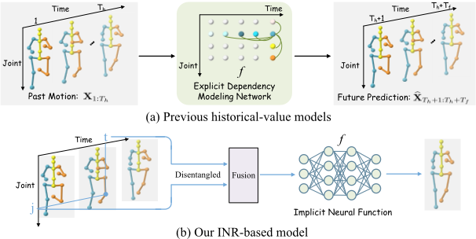
Although encouraging progress has been achieved, existing HMP approaches, commonly known as historical-value models, treat the motion as discrete consecutive frames and use discrete decoders (such as RNNs) for modeling. They predict future human pose(s) as a function of past observations, represented by ̂XTh+1:Th+Tf = f(X1:Th ). However, such discrete modeling ignores the underlying continuous temporal dynamics, thus only inferring the motion at pre-defined, discrete time steps. It also suffers from considerable performance degradation when handling irregular data containing missing values in historical poses. Actually, incomplete raw motion data is frequently encountered in real-world scenarios, even when using professional motion capture (MoCap) devices [9,27,37].
In this paper, we propose to develop a unified framework that allows to predict the human pose at arbitrary continuous temporal locations without the assumption of complete observations. Our key idea is to learn an Implicit Neural Representation (INR), which is a neural function that maps a specific temporal coordinate to the corresponding 3D skeleton positions. This conceptual change significantly simplifies the setup by circumventing the reliance on the explicitly complete motion data, where INR amortizes the signal values of arbitrary temporal location into a compact neural function instead of the discrete frame-wise signal values. Fig. 1 depicts the comparison with historical-value models. Recent progress on implicit functions has primarily focused on modeling complex and dense signals, such as 3D scenes [33,34,50], images [7,12,42] and videos [5,8,56], but rarely on motion data, especially human motions. Our work fills this gap, and observes that a careful design of separately manipulating space and time can promote the accuracy of human motion prediction.
While this framework inherits the advantages of INRs, it also introduces new challenges. First, the coordinate encoding in existing INR-based methods does not suit our setting. For example, video neural representations [8] encode continuous space-time index and output the corresponding pixel values. However, we have no need for continuous sampling on space, since any interpolation between body joints is invalid. Another alternative is to directly learn a continuous time function, as seen in time series modeling [53]. Unfortunately, our experimental findings (see Section 4.5) reveal that blindly discarding space-index yields significantly poor prediction accuracy. Therefore, a tailored motion INR with disentangled spatial-temporal context would be crucial. Second, although a neural representation is extremely expressive to approximate the historical observation of a single motion at a time, it struggles to generalize to future human poses. This arises due to the lack of extrapolation (prediction) capability of neural networks when trained using only one specific motion. Third, a simple MultiLayer Perceptron (MLP) network used in conventional INRs is insufficient for modeling the complicated and missing joint-to-joint relation.
To address these issues, we propose NeRMo, an efficient meta-optimization method to learn neural representations for human motion prediction. One of the key insight of NeRMo is to disentangle the encodings of spatial and temporal coordinates, considering that there is no innate ordering among body joints unlike in time. Concretely, we apply Fourier features to capture highfrequencies [33,44,53] of continuous temporal coordinates, while directly translating the joint index into a learnable code. We further draw inspiration from Vector Quantized (VQ) codebook [45] used in 3D scenes [55], and inject such prior knowledge into the encoded temporal features and joint-specific code. By leveraging the interaction of codebook and each coordinate, NeRMo can effectively enrich the feature representation. To improve generalization capabilities over unseen time steps, we split the parameters of neural networks into personalized modulation and generic rule, where the personalized modulation is responsible for reconstructing the historical poses of each instance, and the generic rule is required to learn a common representation (or inductive bias) over the entire human motion samples. For this purpose, NeRMo adopts optimization-based meta-learning, enabling fast motion prediction with a simple feed-forward pass. To tackle the challenge of insufficient modeling, we propose the integration of MLPs and spatial attention modules, combined with a mask-aware design that adapts to incomplete observations.
Our main contributions are summarized as follows:
- We propose NeRMo, the first attempt to explore INRs for the task of human motion prediction. It represents the motion sequence as a neural function, which is fundamentally different from the explicit modeling in existing historical-value human motion prediction approaches.
- In contrast to other INR-based methods, NeRMo uses a unique way of index encoding and dedicated attention designs to improve prediction accuracy.
- We introduce an efficient meta-optimization to learn personalized modulation and generic rule, for better generalization to future predictions.
- Extensive experiments show the superiority of our NeRMo against state-ofthe-art methods in terms of both complete and incomplete observations.
2 Related Work
Human Motion Prediction (HMP). The prediction of future human poses in 3D previously relied on non-deep learning methods, such as Hidden Markov Models [24]. Later, RNN-based networks [15,17,22,31,47] have been developed to improve temporal dynamic modeling. For example, ERD [15] incorporates nonlinear encoder and decoder networks with RNN. However, RNN-based methods suffer from error accumulation problems due to their inherent architecture. Some works [11,26,28-30] employ feed-forward network to alleviate this problem. For example, LTD [30] adopts Discrete Cosine Transform (DCT) to encode temporal information, and introduces GCNs to capture the spatial structure. DMGNN [26] further learns a multiscale graph to comprehensively model the joint-to-joint relationship. Besides using GCNs, some works [1, 3] show that Transformers can also achieve promising results on modeling spatial-temporal dependencies of human motions. However, these methods primarily concentrate on network architectures to capture spatial-temporal relations, and lack the consideration of incomplete observations involving missing values. Cui et al. [9] have recently proposed a multi-task learning framework to repair the missing values in observed poses and predict future poses at the same time. Unfortunately, they roughly fill in the missing parts with zeros, which makes the network mistakenly interpret zeros as other 'true' but relatively small joint values, and is thus inevitably suboptimal. Another limitation lies in its incapability to predict future poses from complete observations, as it must involve the repairing operation.
Currently in this field, the prediction of future poses is explicitly regarded as a function of historical poses, thus ignoring the inherent continuous temporal dynamics and limiting its applications to incomplete observations. We move towards continuous motion representation by reformulating the problem of human motion prediction as a neural function with the aid of efficient meta-optimization. Implicit Neural Representations (INRs). Recently, INRs have emerged as a prominent vision paradigm with widely-ranging applications in 3D scene synthesis [33,40,55], shape reconstruction [32,34], image super-resolution [7,16], video compression [5,8] and other tasks [41,44,53]. INRs aim to represent signals as a neural function that maps coordinates to target values, such as signed distance [34], occupancy [32], density and RGB values in a neural radiance field (NeRF [33]). Our continuous motion representation draws inspiration from this rapidly growing field and is specifically tailored for human motion prediction. In previous methods, MLPs are typically used to approximate the implicit function, only considering the continuous spatial or temporal coordinates as the input. In contrast, our NeRMo representation employs a purposefully designed neural network composed of MLPs and attention layers, and explicitly disentangles the spatial and temporal contexts.
Closer to our context, more recently, only [4,19,52] have incorporated INRs into human motion-related domain, which adopt Variation AutoEncoder (VAE) or auto-decoder framework for diverse motion generation, conditioned on the temporal coordinate. However, they are not suitable for accurate human motion prediction tasks and cannot handle irregular data properly.
![Fig. 2: Overview of NeRMo: (Left) The disentangled spatial-temporal representations are encoded and fused as a feature map, which are then fed into a codebookcoordinate attention. (Middle) NeRMo consists of several layers of MLPs and a maskaware spatial attention module. The meta-optimization framework is designed to learn strong inductive bias by a bi-level optimization, where the inner loop is optimized over the past motion for optimal personalized modulation θ∗ , and the outer loop is optimized over the future motion to update instance-agnostic generic rule ϕ. (Right) At inference, NeRMo can simultaneously handle missing values and predict future poses.](assets/figure-2.png)
3 Our Method
The goal of 3D human motion prediction task is to accurately forecast the future movements of human beings based on the given past observation. Formally, let Xt = [xt,1, xt,2, · · · , xt,J ] ∈ RJ×3 denote the human pose containing 3D skeleton position of J body joints, where xt,j ∈ R3 represents the j-th joint at timestamp t. Let X1:Th = {X1,X2, · · · ,XTh } be the past observation, and XTh+1:Th+Tf = {XTh+1,XTh+2, · · · ,XTh+Tf } be the future motion. Notably, the observation X1:Th may be incomplete, involving missing values at arbitrary position.
3.1 Reformulation from Continuous Perspective
Previous studies formulate the task of human motion prediction as the problem of learning a function fpred(·) that aims to minimize the discrepancy between the predicted future motion ̂ XTh+1:Th+Tf = fpred(X1:Th ) and the ground-truth future motion XTh+1:Th+Tf . However, these methods consider motions as the discretized sequence of human poses with discrete modeling. This neglects the continuous dynamics inherent in human motion, and poses challenges in handling historical poses containing missing values.
Motivated by the recent advances in neural radiance fields (NeRF) [33], we introduce a new paradigm based on implicit neural representation (INR) [41,44]. Our work reformulates the human motion prediction as the task of learning a continuous function that approximates the temporal dynamics. Fig. 2 illustrates an overview of our model. In particular, we disentangle the spatial and temporal contexts, and leverage a codebook-coordinate attention module to enhance their feature representations (Section 3.2). These features are then processed by our customized networks (Section 3.3), where a meta-optimization framework is proposed to make our INR-based method capable of forecasting (Section 3.4).
Finally, we provide a flexible solution for handling missing values and predicting future poses (Section 3.5).
3.2 Neural Motion Representation
INRs represent a signal f(·) : Rm ↦→ Rn of a coordinate mapping to the corresponding signal values. For example, a human motion can be represented by f(·) : t ↦→Xt with m= 1, n = 3 · J, where t is a temporal coordinate and Xt is a complete human pose. We suppose that the normalized range of temporal coordinate is [0, 1]. To approximate Xt, we employ a neural network fθ typically a MultiLayer Perceptron (MLP), parameterized by θ, such that Xt ≈ fθ(t). Since the function f is continuous, INRs are resolution agnostic, allowing them to be evaluated at arbitrary coordinates within the normalized range. Recent studies [4, 5, 53] have proposed similar time-index function to model dynamic data, showing promising results. However, we find that this design faces challenges in human motion prediction, and struggles to handle observations involving missing values (see Section C in supplementary for detailed analysis).
Disentangled Space-Time Motion INR. As an alternative, we propose to disentangle the spatial-temporal information, and learn a set of joint-specific latent codes z = {zj}Jj=1 :

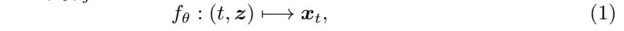
where zj ∈ Rd is indexed by a discrete joint variable j, and serves as a compact representation of a specific body joint, greatly reducing the complexity in modeling human motions within fθ. Before training, the latent codes are randomly and independently initialized for all joints. Notably, in line with classical human motion prediction methods [26,30], we conceptualize a human pose as a combination of (3 · J) joints. This enables us to make predictions based on historical poses with missing values.
Why Neural Representation Works. Recent studies [18, 30] have utilized the Discrete Cosine Transform (DCT) to encode temporal information, which has been proven to be beneficial for human motion prediction. The underlying intuition is that the DCT can capture the smoothness of human motion by truncating some of the high frequencies. If all DCT coefficients are used, the resulting representation will generate jittery motion. To prevent this, these methods manually select a certain number of DCT coefficients.
It is worth mentioning that a similar phenomenon has been identified in neural representation. More specifically, there exists a 'spectral bias' [35] in the network training of INR, leading to low performance for high-frequency components. Several attempts [33, 41, 44] have been explored to better fit data with high-frequency variations. In this paper, we use Fourier features [33] as our frequency embedding γ(·) to map the temporal coordinates t from R1 into a higher dimensional space R2L, expressed as: \label {eq:2} \gamma (t)=(\cdots ,\sin (2^{l}\pi t),\cos (2^{l}\pi t),\cdots ), (2)

where l ∈ {0, 1, 2, · · · ,L - 1}, and L is a hyperparameter that determines the dimension. By adjusting the value of L, we can control the fitting capacity of our INR model, i.e., a larger L allows for a more precise fit. However, stronger fitting capability is not always desirable, as excessive fitting may lead to degraded smoothness of the motion. This is similar to the case that all DCT coefficients are used. Note that we do not apply frequency embedding to the joint-specific latent codes due to their discretized nature.
Codebook-Coordinate Attention. To further enrich our disentangled spatialtemporal feature representation, inspired by recent success [55] in 3D scenes, we propose a novel Codebook-Coordinate Attention (CCA) module to inject prior information into coordinates. We achieve this with a pre-trained codebook comprising M1 codes denoted as E = {ei}M1 i=1 , where each code ei ∈ RD and D represents the dimension of codes. We introduce learnable query vectors denoted as Q = {qi}M2 i=1 , which is adopted for retrieving motion-relevant prototypes from the codebook using a cross-attention mechanism. These retrieved prototypes undergo iterative enhancement through multiple self-attention layers. Finally, we incorporate the prototype information into each coordinate representation through a cross-attention layer. Through the proposed CCA module, we effectively exploit the knowledge contained in the codebook to improve the feature representation of the space-time coordinates.
3.3 Network Architecture
We build the neural network backbone using an MLP and a mask-aware spatial attention module (Fig. 2). The MLP consists of a series of fully connected blocks (FCBlocks), each comprising a fully connected feed forward layer with layer normalization, ReLU activations and a skip connection at the end. However, since our discrete joint coordinates may not adequately capture high-frequency patterns, we leverage a spatial attention to model inter-joint relations. To handle predictions from incomplete observations, we further integrate a mask-aware design into the attention mechanism to enhance the ability to infer dependencies between observed and masked coordinates.
Mask-Aware Spatial Attention. Our mask-aware spatial attention module contains two components: observed-only attention and full attention. Both components share the same structure, differing only in the input mask. We employ a binary mask M ∈ {0, 1}J×Th to indicate the state, where the missing or unobserved part is represented by zero. Accordingly, M becomes a matrix of all ones in full attention mask. Based on this, we compute the spatial attention mask A ∈ RJ×J for the input feature F ∈ RJ×d as follows:

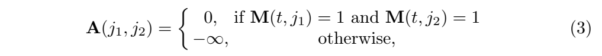
where A(j1, j2) determines whether conducting attention between joint j1 and j2. The attention is then derived by:

where Q, K, V are query, key, value matrices, respectively.

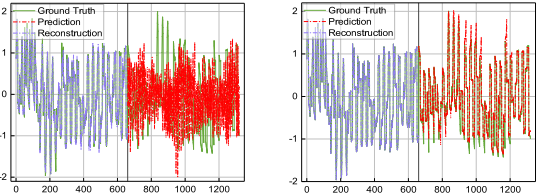
3.4 Meta-Optimization Framework
Motivation. While vanilla INRs are indeed highly expressive with a strong capability to approximate complex human motions, it is required to encode each motion into a separate continuous function. This design is not optimal when confronted with a large number of diverse motions. Another critical observation is that vanilla INRs struggle with extrapolation across the forecast horizon, ultimately impeding their ability to generalize to future poses. As depicted in Fig. 3 (left), given a past motion, vanilla INRs can well fit the observed window [0, Th], but achieve significant decline for the predicted window [Th + 1, Th + Tf ].
Meta-Optimization. To adapt the INR model to new samples and meanwhile have good extrapolation, inspired by recent generalizable INRs [13, 23, 53], we propose a meta-optimization framework to learn an inductive bias from data. This can be achieved by categorizing the parameters of INRs into the following two types: i) personalized modulation as instance-specific parameter ϕ, and ii) generic rule as instance-agnostic parameter θ. Specifically, generic rule is responsible for learning the strong inductive bias from a substantial number of diverse future motions, while personalized modulation aims to adapt rapidly to the historical motions at test time. In this way, as exhibited in Fig. 3 (right), we can predict future poses XTh+1:Th+Tf by using extrapolation ability of ϕ (red), while θ serves as reconstructing new observations X1:Th (blue). Formally, given N training samples {X(i) 1:Th , X(i) Th+1:Th+Tf }Ni=1 , the optimization problem is:

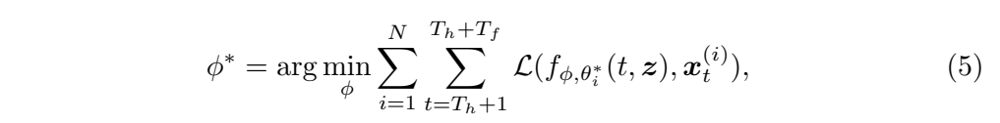

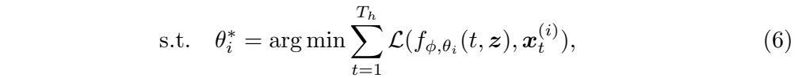
where Equation (5) represents the outer loop, and Equation (6) represents the inner loop. The first summation denotes iterating over the samples of the whole dataset and the second summation denotes each timestamp of future poses.
Efficient Meta-Optimization. Recent progress have made significant advancements in exploring bi-level optimization problems [14,36], and one naive method is to directly backpropagate through inner gradient steps. To enhance the efficiency of both training and inference processes, we specify that the personalized ciency of both training and inference processes, we specify that the personalized parameters are set as generic rule. Consequently, the inner loop optimization problem is simplified into a straightforward ridge regression problem [2] with a closed-form solution, eliminating the need for intricate gradient calculations.
3.5 Inference
During the inference process, our goal is to estimate the value for future timestamps based on the incoming partial observation. We can encounter two scenarios: i) Dealing with a complete past motion, which follows the conventional forecasting setting discussed in Section 4.3; ii) Dealing with an incomplete past motion, as described in the repairing and forecasting setting in Section 4.4. The parameters of the generic rule denoted as ϕ are fixed, while the parameters of personalized modulation denoted as θ are optimized based on the new observations. Notably, our model has the remarkable capability to simultaneously repair missing values and forecast future human poses using a single trained model, which eliminates the need for a time-consuming multi-task learning framework [9] or a denoising diffusion probabilistic model [37].
4 Experiments
4.1 Datasets
Human3.6M [21] consists of 7 actors (S1, S5, S6, S7, S8, S9 and S11) in 15 different types of actions, with each action involving 22 body joints. We downsample the frame rate of motion sequence from 50 fps to 25 fps, and convert them to 3D coordinate representation, excluding global rotations and translations of poses. Subjects S5 and S11 are used for testing and validation, respectively, while the remaining subjects are utilized for training purposes.
CMU-MoCap contains 8 distinct human action types, involving 38 body joints that are converted to 3D coordinates representation. The global rotations and translations of poses are excluded. Following [11, 30], we selectively retain 25 specific joints, and divide the dataset into separate training and testing sets.
3DPW [46] is a comprehensive collection of human pose predictions involving both indoor and outdoor activities. The poses in the dataset are represented in 3D space, and each subject is characterized by 23 joints. The framerate of motions are captured at 30 fps.
4.2 Comparison Settings
Evaluation Metrics. We utilize the Mean Per Joint Position Error (MPJPE) as our evaluation metric. The MPJPE measures the average Euclidean distance in 3D space between the predicted joints and the target joints at each prediction timestamp. Compared to previous Mean Angle Error (MAE) metric [31], the MPJPE considers the larger degrees of freedom involved in human poses.

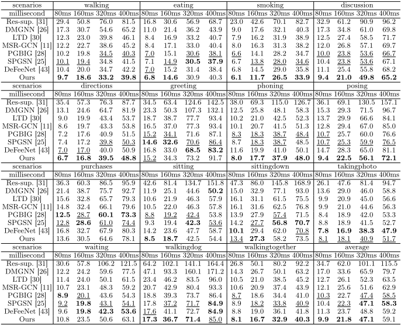
Recognized table text (check against the image)
| scenarios | walking | eating | smoking | discussion | ||||||||||||
|---|---|---|---|---|---|---|---|---|---|---|---|---|---|---|---|---|
| millisecond | 160ms 320ms 400ms | |||||||||||||||
| 80ms | 160ms | 320ms | 400ms | 80ms | 160ms | 320ms | 400ms | 80ms | 160ms | 320ms | 400ms | 80ms | ||||
| Res-sup. [31] | 29.4 | 50.8 | 76.0 | 81.5 | 16.8 | 30.6 | 56.9 | 68.7 | 23.0 | 42.6 | 70.1 | 82.7 | 32.9 | 61.2 | 90.9 | 96.2 |
| DMGNN [26] | 17.3 | 30.7 | 54.6 | 65.2 | 11.0 | 21.4 | 36.2 | 43.9 | 9.0 | 17.6 | 32.1 | 40.3 | 17.3 | 34.8 | 61.0 | 69.8 |
| LTD [30] | 12.3 | 23.0 | 39.8 | 46.1 | 8.4 | 16.9 | 33.2 | 40.7 | 7.9 | 16.2 | 31.9 | 38.9 | 12.5 | 27.4 | 58.5 | 71.7 |
| MSR-GCN [11] | 12.2 | 22.7 | 38.6 | 45.2 | 8.4 | 17.1 | 33.0 | 40.4 | 8.0 | 16.3 | 31.3 | 38.2 | 12.0 | 26.8 | 57.1 | 69.7 |
| PGBIG [28] | 10.2 | 19.8 | 34.5 | 40.3 | 7.0 | 15.1 | 30.6 | 38.1 | 6.6 | 14.1 | 28.2 | 34.7 | 10.0 | 23.8 | 53.6 | 66.7 |
| SPGSN [25] | 10.1 | 19.4 | 34.8 | 41.5 | 7.1 | 14.9 | 30.5 | 37.9 | 6.7 | 13.8 | 28.0 | 34.6 | 10.4 | 23.8 | 53.6 | 67.1 |
| DeFeeNet [43] | 10.4 | 20.0 | 34.7 | 42.2 | 7.0 | 15.2 | 31.4 | 38.4 | 6.8 | 14.5 | 29.0 | 35.8 | 11.1 9.4 | 25.4 21.0 | 55.8 | 68.2 65.2 |
| Ours | 9.7 | 18.6 33.2 39.8 directions | 6.8 14.6 30.9 40.3 greeting | 6.1 11.7 26.5 33.9 phoning | 49.8 posing | |||||||||||
| scenarios millisecond | 320ms 400ms | 80ms 160ms 320ms 400ms | ||||||||||||||
| 80ms | 160ms | 320ms | 400ms | 80ms | 160ms | 80ms | 160ms | 320ms | 400ms | |||||||
| Res-sup. [31] | 35.4 | 57.3 | 76.3 | 87.7 | 34.5 | 63.4 | 124.6 | 142.5 | 38.0 | 69.3 | 115.0 | 126.7 | 36.1 | 69.1 | 130.5 | 157.1 |
| DMGNN [26] | 13.1 | 24.6 | 64.7 | 81.9 | 23.3 | 50.3 | 107.3 | 132.1 | 12.5 | 25.8 | 48.1 | 58.3 | 15.3 | 29.3 | 71.5 | 96.7 |
| LTD [30] | 9.0 | 19.9 | 43.4 | 53.7 | 18.7 | 38.7 | 77.7 | 93.4 | 10.2 | 21.0 | 42.5 | 52.3 | 13.7 | 29.9 | 66.6 | 84.1 |
| MSR-GCN [11] | 8.6 | 19.7 | 43.3 | 53.8 | 16.5 | 37.0 | 77.3 | 93.4 | 10.1 | 20.7 | 41.5 | 51.3 | 12.8 | 29.4 | 67.0 | 85.0 |
| PGBIG [28] | 7.2 | 17.6 | 40.9 | 51.5 | 15.2 | 34.1 | 71.6 | 87.1 | 8.3 | 18.3 | 38.7 | 48.4 | 10.7 | 25.7 | 60.0 | 76.6 |
| SPGSN [25] | 7.4 | 17.2 | 39.8 | 50.3 | 14.6 | 32.6 | 70.6 | 86.4 | 8.7 | 18.3 | 38.7 | 48.5 | 10.7 | 25.3 | 59.9 | 76.5 |
| DeFeeNet [43] | 7.0 | 17.0 | 40.0 | 50.9 | 16.8 | 33.0 | 68.5 | 83.2 | 11.6 | 19.9 | 41.0 | 50.1 | 14.7 | 28.3 | 65.0 | 81.1 |
| Ours | 6.7 | 15.2 | 34.3 | 73.2 | 91.7 | 8.0 | 17.7 | 37.9 | 48.0 | 9.4 | 22.5 | 56.1 | 72.1 | |||
| scenarios | 16.8 39.5 48.8 purchases | takingphoto | ||||||||||||||
| sitting | sittingdown | |||||||||||||||
| millisecond | 80ms | 160ms | 320ms | 400ms | 80ms | 160ms | 320ms | 400ms | 80ms | 160ms | 320ms | 400ms | 80ms | 160ms | 320ms | 400ms |
| Res-sup. [31] | 36.3 | 60.3 | 86.5 | 95.9 | 42.6 | 81.4 | 134.7 | 151.8 | 47.3 | 86.0 | 145.8 | 168.9 | 26.1 | 47.6 | 81.4 | 94.7 |
| DMGNN [26] | 21.4 | 38.7 | 75.7 | 92.7 | 11.9 | 25.1 | 44.6 | 50.2 | 15.0 | 32.9 | 77.1 | 93.0 | 13.6 | 29.0 | 46.0 | 58.8 |
| LTD [30] | 15.6 | 32.8 | 65.7 | 79.3 | 10.6 | 21.9 | 46.3 | 57.9 | 16.1 | 31.1 | 61.5 | 75.5 | 9.9 | 20.9 | 45.0 | 56.6 |
| MSR-GCN [11] | 14.8 | 32.4 | 66.1 | 79.6 | 10.5 | 22.0 | 46.3 | 57.8 | 16.1 | 31.6 | 62.5 | 76.8 | 9.9 | 21.0 | 44.6 | 56.3 |
| PGBIG [28] | 12.5 | 28.7 | 60.1 | 73.3 | 8.8 | 19.2 | 42.4 | 53.8 | 13.9 | 27.9 | 57.4 | 71.5 | 8.4 | 18.9 | 42.0 | 53.3 |
| SPGSN [25] | 12.8 | 28.6 | 61.0 | 74.4 | 9.3 | 19.4 | 42.3 | 53.6 | 14.2 | 27.7 | 56.8 | 70.7 | 8.8 | 18.9 | 41.5 | 52.7 |
| DeFeeNet [43] | 16.8 | 32.7 | 67.9 | 80.3 | 14.2 | 23.6 | 47.7 | 58.7 | 10.1 | 29.4 | 62.0 | 70.8 | 7.8 | 16.9 | 38.3 | 47.9 |
| Ours | 13.6 | 30.5 | 64.6 | 78.1 | 8.5 | 18.7 | 42.5 | 54.4 | 13.4 | 27.3 | 58.2 | 73.5 | 8.1 | 18.1 | 40.9 | 51.7 |
| scenarios | waiting | walkingdog | walkingtogether | average | ||||||||||||
| 160ms | ||||||||||||||||
| millisecond | 80ms | 160ms | 320ms | 400ms | 80ms | 160ms | 320ms | 400ms | 80ms | 160ms | 320ms | 400ms | 80ms | 320ms | 400ms | |
| Res-sup. [31] | 30.6 | 57.8 | 106.2 | 121.5 | 64.2 | 102.1 | 141.1 | 164.4 | 26.8 | 50.1 | 80.2 | 92.2 | 34.7 | 62.0 | 101.1 | 115.5 |
| DMGNN [26] | 12.2 | 24.2 | 59.6 | 77.5 | 47.1 | 93.3 | 160.1 | 171.2 | 14.3 | 26.7 | 50.1 | 63.2 | 17.0 | 33.6 | 65.9 | 79.7 |
| LTD [30] | 11.4 | 24.0 | 50.1 | 61.5 | 23.4 | 46.2 | 83.5 | 96.0 | 10.5 | 21.0 | 38.5 | 45.2 | 12.7 | 26.1 | 52.3 | 63.5 |
| MSR-GCN [11] | 10.7 | 23.1 | 48.3 | 59.2 | 20.7 | 42.9 | 80.4 | 93.3 | 10.6 | 20.9 | 37.4 | 43.9 | 12.1 | 25.6 | 51.6 | 62.9 |
| PGBIG [28] | 8.9 | 20.1 | 43.6 | 54.3 | 18.8 | 39.3 | 73.7 | 86.4 | 8.7 | 18.6 | 34.4 | 41.0 | 10.3 | 22.7 | 47.4 | 58.5 |
| SPGSN [25] | 9.2 | 19.8 | 43.1 | 54.1 | 17.8 | 37.2 | 71.7 | 84.9 | 8.9 | 18.2 | 33.8 | 40.9 | 10.4 | 22.3 | 47.1 | 58.3 |
| DeFeeNet [43] | 9.6 | 19.8 | 42.3 | 53.6 | 17.6 | 41.1 | 72.7 | 84.9 | 8.8 | 19.0 | 36.1 | 41.8 | 11.3 | 23.7 | 48.8 | 59.2 |
| Ours | 10.8 | 23.5 | 50.6 | 63.1 | 17.3 | 36.7 | 71.4 | 85.0 | 8.1 | 16.7 | 32.9 | 40.3 | 9.9 | 21.8 | 47.1 | 59.1 |
Experimental Settings. Following [11], we take 400-milliseconds history (Th = 10) as input, and predict future motions in one second (Tf = 25) for Human3.6M and CMU-MoCap. For 3DPW, the input length and output length are set to 10 and 30. Following [28], we report the prediction results on the whole test dataset. Comparison Baselines. (i) For conventional forecasting setting, we compare our INR-based model with the state-of-the-art historical-value baselines, including Res-sup [31], LTD [30], DMGNN [26], MSR-GCN [11], PGBIG [28], SPGSN [25] and DeFeeNet [43]. (ii) For repairing and forecasting from incomplete observations setting, we use representative baselines LTD [30], DMGNN [26] and R+LTD and R+DMGNN, where the prefix "R+" means that we repair the observation first using motion recovery method [10], and then generate the prediction based upon the repaired motion. We further add a multi-task learning method MT-GCN [9] and a diffusion-based method TCD [37] as baselines, both of which aim to simultaneously repair missing values and predict future poses.

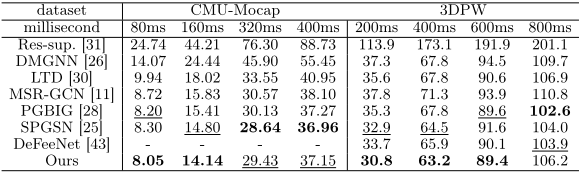
Recognized table text (check against the image)
| dataset | CMU-Mocap | 3DPW | ||||||
|---|---|---|---|---|---|---|---|---|
| millisecond | 80ms | 160ms | 320ms | 400ms | 200ms | 400ms | 600ms | 800ms |
| Res-sup. [31] | 24.74 | 44.21 | 76.30 | 88.73 | 113.9 | 173.1 | 191.9 | 201.1 |
| DMGNN [26] | 14.07 | 24.44 | 45.90 | 55.45 | 37.3 | 67.8 | 94.5 | 109.7 |
| LTD [30] | 9.94 | 18.02 | 33.55 | 40.95 | 35.6 | 67.8 | 90.6 | 106.9 |
| MSR-GCN [11] | 8.72 | 15.83 | 30.57 | 38.10 | 37.8 | 71.3 | 93.9 | 110.8 |
| PGBIG [28] | 8.20 | 15.41 | 30.13 | 37.27 | 35.3 | 67.8 | 89.6 | 102.6 |
| SPGSN [25] | 8.30 | 14.80 | 28.64 | 36.96 | 32.9 | 64.5 | 91.6 | 104.0 |
| DeFeeNet [43] | - | - | - | - | 33.7 | 65.9 | 90.1 | 103.9 |
| Ours | 8.05 | 14.14 | 29.43 | 37.15 | 30.8 | 63.2 | 89.4 | 106.2 |

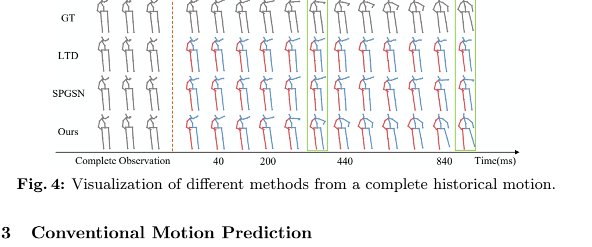
4.3 Conventional Motion Prediction
In this section, we are interested in the conventional human motion prediction scenario, which predicts future poses from the complete historical motions.
Quantitative Comparison. Table 1 presents the MPJPEs of our method and the baselines on all actions from the Human3.6M dataset for human motion prediction. Table 2 shows the average prediction errors at each timestamp on CMU-MoCap and 3DPW datasets. More detailed tables are provided in Section E of supplementary. According to the table, our NeRMo model demonstrates superiority compared to the baselines (including SOTA models [25,28,43]) at most timestamps, closely approaching the best results at other timestamps. Moreover, NeRMo exhibits consistent performance across all three datasets. We have also noticed that NeRMo achieves significantly lower MPJPEs in near future timestamps, but shows comparatively weaker performance at distant timestamps. This is natural as INRs always tend to overfit past poses, and do not generalize well to the future. Although we use meta-learning to enhance the extrapolation, performance at distant timestamps is somewhat sacrificed due to efficient last-layer meta-optimization (see supp. Section F). Notably, this is the first application of a continuous model in human motion prediction, achieving comparable performance as discrete methods within their specific setting.
Qualitative Comparison. Fig. 4 illustrates an example of the predicted poses generated by different approaches on Human3.6M. The vertical dashed orange line separates the observation and the prediction. It is evident that our predictions outperform two representative baselines, including LTD and SPGSN, particularly in capturing the movement of both arms with higher accuracy.

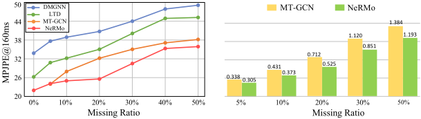
4.4 Predicting & Repairing Partial Observation
In real-world scenarios, it is frequently encountered that motion data may be missing or irregularly sampled when attempting to make predictions on new time windows. In this section, we focus on simulating these scenarios.
Quantitative Comparison. Table 3 shows the prediction errors of four representative actions on Human3.6M dataset, where future poses are generated from incomplete observations with 20% arbitrary missing values. This task poses a challenge since the mainstream HMP methods, such as LTD and DMGNN, primarily aim to model spatial-temporal dependencies of human motions, and missing values can have a detrimental impact on the modeling process. Therefore, we also compare R+LTD and R+DMGNN, which first employ the method proposed by [10] to repair the observations before making predictions. From the table, we find that R+LTD and R+DMGNN yield much lower MPJPEs than directly predicting from the original incomplete observation. Meanwhile, the two-stage training strategy achieves inferior performance compared to MT-GCN and TCD. As TCD aims for stochastic motion prediction, we sample 5 times for it, and the best sample is considered. In contrast to these historical-value models, our INRbased model achieves the best performance based on the incomplete observation, resulting in MPJPEs reductions of 10.7%, 7.9%, 6.0% and 4.1% at 80, 160, 320 and 400ms, respectively. These results indicate that continuous models have a natural advantage in handling such cases as they are designed to accommodate irregular sampling in observations through the use of implicit neural functions. And our method is significantly more efficient compared to other methods, except for original versions of DMGNN and LTD. In addition, NeRMo also exhibits distinctive properties, making it adaptable to various practical applications with flexible INR framework. For instance, NeRMo has the ability to predict poses at any specific timestamps. More details are in supplemental material.
Different Missing Ratios. As depicted in Fig. 5 (left), we report the average prediction errors at 160ms based on incomplete observations with varying random missing ratios on Human3.6M. Our method consistently outperforms the baselines across different missing ratio settings. It is worth noting that MT-GCN lacks the capability to make predictions from complete observations (0% missing ratio), which limits its flexibility for various applications. In Fig. 5 (right), we showcase the repairing ability of MT-GCN, TCD and NeRMo, measured by computing the L2 distance between the repaired poses and the ground truth. It is apparent that our NeRMo surpasses MT-GCN and TCD in terms of repairing performance, especially for the larger missing part in observations.

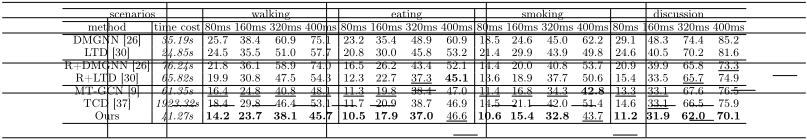
Recognized table text (check against the image)
| scenarios | walking | smoking | discussion | ||||||||||||||
|---|---|---|---|---|---|---|---|---|---|---|---|---|---|---|---|---|---|
| method | time cost | 80ms | 160ms | 320ms | 400ms | 80ms | eating 160ms | 320ms | 400ms | 80ms | 160ms | 320ms | 400ms | 80ms | 160ms | 320ms | 400ms |
| DMGNN [26] LTD [30] | 35.19s 24.85s | 25.7 24.5 | 38.4 35.5 | 60.9 51.0 | 75.1 57.7 | 23.2 20.8 | 35.4 30.0 | 48.9 45.8 | 60.9 53.2 | 18.5 21.4 | 24.6 29.9 | 45.0 43.9 | 62.2 49.8 | 29.1 24.6 | 48.3 40.5 | 74.4 70.2 | 85.2 81.6 |
| R+DMGNN [26] R+LTD [30] | 76.24s 65.82s | 21.8 19.9 | 36.1 30.8 | 58.9 47.5 | 74.0 54.3 | 16.5 12.3 | 26.2 22.7 | 43.4 37.3 | 52.1 45.1 | 14.4 13.6 | 20.0 37.7 | 40.8 | 53.7 50.6 | 20.9 15.4 | 39.9 33.5 | 65.8 65.7 | 73.3 74.9 |
| MT-GCN [9] TCD [37] Ours | 61.35s 1923.32s 41.27s | 16.4 18.4 14.2 | 24.8 29.8 23.7 | 40.8 46.4 38.1 | 48.1 53.1 45.7 | 11.3 19.8 11.7 20.9 10.5 17.9 | 38.4 | 38.7 37.0 | 47.0 46.9 46.6 | 11.4 14.5 10.6 | 18.9 16.8 21.1 15.4 | 34.3 42.0 32.8 | 42.8 51.4 43.7 | 13.3 14.6 11.2 | 33.1 33.1 31.9 | 67.6 66.5 62.0 | 76.5 75.9 70.1 |

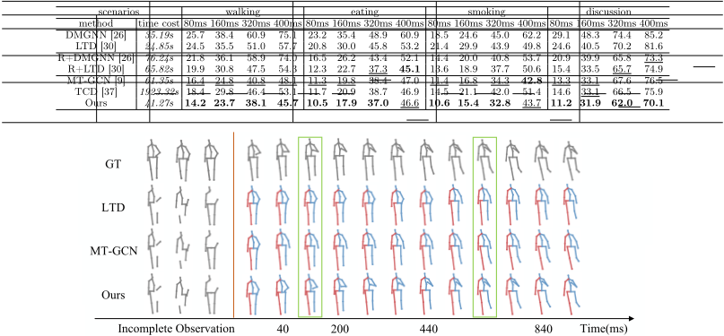
is apparent that our NeRMo surpasses MT-GCN and TCD in terms of repairing performance, especially for the larger missing part in observations.
Qualitative Comparison. Fig. 6 displays an example of the predicted poses generated by different approaches from the same incomplete observations. In the observed poses, the left arm values are missing, posing a challenge for previous methods like LTD and MT-GCN to accurately predict the left arm movement. Consequently, these methods tend to generate poses in the left arm part that resemble the mean posse. In contrast, our spatial-temporal disentangled representation does not rely on explicitly handling missing values.
4.5 Ablation Studies
Effect of the Coordinate Encoding. The encoding of the input coordinates plays a critical role in neural representation. We investigate the impact of different encoding manner, including Fourier features and codebook enriched representations. Table 4 shows the prediction results on CMU-MoCap. “Fourier” means that we only use Fourier features to encode t like NeRF [33], and “Codebook” is our codebook-coordinate attention design. We find that Fourier features significantly decrease the MPJPEs, and our codebook-based representation further improves the performance, verifying the effectiveness of our encoding design.
Temporal vs. Spatial-Temporal Representation. We explore the effect of our disentangled space-time motion INR. Fig. 7(a) shows the comparison between temporal and spatial-temporal representations. We observe that the performance

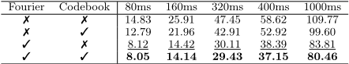
Recognized table text (check against the image)
| Fourier | Codebook | 80ms | 160ms | 320ms | 400ms | 1000ms |
|---|---|---|---|---|---|---|
| ✗ | ✗ | 14.83 | 25.91 | 47.45 | 58.62 | 109.77 |
| ✗ | ✓ | 12.79 | 21.96 | 42.91 | 52.92 | 99.60 |
| ✓ | ✗ | 8.12 | 14.42 | 30.11 | 38.39 | 83.81 |
| ✓ | ✓ | 8.05 | 14.14 | 29.43 | 37.15 | 80.46 |

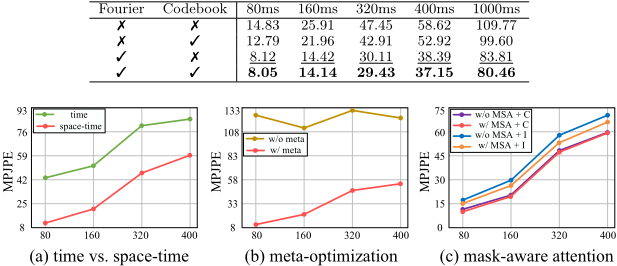
of spatial-temporal representation is much better than that of temporal representation, indicating that using temporal representation alone in time series [53] is not suitable for human motion prediction. This can be ascribed to the ridge regression solution of our specific meta-optimization.
Importance of Meta-Optimization. We evaluate the effect of the metaoptimization in our model. Fig. 7(b) presents the average prediction errors, where "w/o" denotes not using the meta-optimization. We note that NeRMo without meta-optimization may not be a meaningful baseline since the model outputs are always the same regardless of the input historical poses.
Ablation on Model Architecture. We explore the effect of mask-aware spatial attention (MSA) in our network architecture. Fig. 7(c) shows the prediction results, where "w/o" denotes not using MSA, "C" denotes complete observation, and "I" denotes incomplete observation. We find that adding MSA results in more effective predictions, especially for the observation with missing values.
5 Conclusion
In this paper, we propose NeRMo, a novel implicit neural representation method for 3D human motion prediction. The key idea of NeRMo is to represent motions as a continuous function to approximate the temporal dynamics, which is parameterized by a neural network. We also introduce an efficient meta-optimization method to learn a inductive bias from large number of diverse motions, enhancing its extrapolation capability across future time steps. Experimental evaluations show that NeRMo performs competitively with state-of-the-art historical-value human motion prediction methods. Our method provides a new insight into human motion prediction, and is more closer to real-world applications.
Acknowledgements. This work was supported by the China Postdoctoral Foundation (NO. 2023M741711), and the National Natural Science Foundation of China (NO. 62176125, 61772272).
References
1. Aksan, E., Kaufmann, M., Cao, P., Hilliges, O.: A spatio-temporal transformer for 3d human motion prediction. In: Proceedings of the International Conference on 3D Vision. pp. 565-574 (2021)
2. Bertinetto, L., Henriques, J., Torr, P., Vedaldi, A.: Meta-learning with differentiable closed-form solvers. In: Proceedings of the International Conference on Learning Representations (2019)
3. Cai, Y., Huang, L., Wang, Y., Cham, T.J., Cai, J., Yuan, J., Liu, J., Yang, X., Zhu, Y., Shen, X., et al.: Learning progressive joint propagation for human motion prediction. In: Proceedings of the European Conference on Computer Vision. pp. 226-242 (2020)
4. Cervantes, P., Sekikawa, Y., Sato, I., Shinoda, K.: Implicit neural representations for variable length human motion generation. In: Proceedings of the European Conference on Computer Vision (2022)
5. Chen, H., He, B., Wang, H., Ren, Y., Lim, S.N., Shrivastava, A.: Nerv: Neural representations for videos. Proceedings of the Advances in Neural Information Processing Systems (2021)
6. Chen, S., Liu, B., Feng, C., Vallespi-Gonzalez, C., Wellington, C.: 3d point cloud processing and learning for autonomous driving: Impacting map creation, localization, and perception. IEEE Signal Processing Magazine 38(1), 68-86 (2020)
7. Chen, Y., Liu, S., Wang, X.: Learning continuous image representation with local implicit image function. In: Proceedings of the IEEE/CVF Conference on Computer Vision and Pattern Recognition. pp. 8628-8638 (2021)
8. Chen, Z., Chen, Y., Liu, J., Xu, X., Goel, V., Wang, Z., Shi, H., Wang, X.: Videoinr: Learning video implicit neural representation for continuous space-time superresolution. In: Proceedings of the IEEE/CVF Conference on Computer Vision and Pattern Recognition. pp. 2047-2057 (2022)
9. Cui, Q., Sun, H.: Towards accurate 3d human motion prediction from incomplete observations. In: Proceedings of the IEEE/CVF Conference on Computer Vision and Pattern Recognition. pp. 4801-4810 (2021)
10. Cui, Q., Sun, H., Li, Y., Kong, Y.: A deep bi-directional attention network for human motion recovery. In: Proceedings of the International Joint Conference on Artificial Intelligence. pp. 701-707 (2019)
11. Dang, L., Nie, Y., Long, C., Zhang, Q., Li, G.: Msr-gcn: Multi-scale residual graph convolution networks for human motion prediction. In: Proceedings of the IEEE/CVF International Conference on Computer Vision. pp. 11467-11476 (2021)
12. Dupont, E., Goliński, A., Alizadeh, M., Teh, Y.W., Doucet, A.: Coin: Compression with implicit neural representations. arXiv preprint arXiv:2103.03123 (2021)
13. Dupont, E., Kim, H., Eslami, S., Rezende, D., Rosenbaum, D.: From data to functa: Your data point is a function and you can treat it like one. In: Proceedings of the International Conference on Machine Learning. pp. 5694-5725 (2022)
14. Finn, C., Abbeel, P., Levine, S.: Model-agnostic meta-learning for fast adaptation of deep networks. In: Proceedings of the International Conference on Machine Learning. pp. 1126-1135 (2017)
15. Fragkiadaki, K., Levine, S., Felsen, P., Malik, J.: Recurrent network models for human dynamics. In: Proceedings of the IEEE/CVF International Conference on Computer Vision. pp. 4346-4354 (2015)
16. Gao, S., Liu, X., Zeng, B., Xu, S., Li, Y., Luo, X., Liu, J., Zhen, X., Zhang, B.: Implicit diffusion models for continuous super-resolution. In: Proceedings of the
IEEE/CVF Conference on Computer Vision and Pattern Recognition. pp. 1002110030 (2023)
17. Gui, L.Y., Wang, Y.X., Liang, X., Moura, J.M.: Adversarial geometry-aware human motion prediction. In: Proceedings of the European Conference on Computer Vision. pp. 786-803 (2018)
18. Guo, W., Du, Y., Shen, X., Lepetit, V., Alameda-Pineda, X., Moreno-Noguer, F.: Back to mlp: A simple baseline for human motion prediction. In: Proceedings of the IEEE/CVF Winter Conference on Applications of Computer Vision. pp. 4809-4819 (2023)
19. He, C., Saito, J., Zachary, J., Rushmeier, H., Zhou, Y.: Nemf: Neural motion fields for kinematic animation. Proceedings of the Advances in Neural Information Processing Systems (2022)
20. Hu, S., Sun, H., Li, B., Wei, D., Li, W., Lu, J.: Fast adaptation for human pose estimation via meta-optimization. In: Proceedings of the IEEE/CVF Conference on Computer Vision and Pattern Recognition. pp. 1792-1801 (2024)
21. Ionescu, C., Papava, D., Olaru, V., Sminchisescu, C.: Human3.6m: Large scale datasets and predictive methods for 3d human sensing in natural environments. IEEE Transactions on Pattern Analysis and Machine Intelligence 36(7), 1325-1339 (2013)
22. Jain, A., Zamir, A.R., Savarese, S., Saxena, A.: Structural-rnn: Deep learning on spatio-temporal graphs. In: Proceedings of the IEEE/CVF Conference on Computer Vision and Pattern Recognition. pp. 5308-5317 (2016)
23. Kim, C., Lee, D., Kim, S., Cho, M., Han, W.S.: Generalizable implicit neural representations via instance pattern composers. In: Proceedings of the IEEE/CVF Conference on Computer Vision and Pattern Recognition. pp. 11808-11817 (2023)
24. Lehrmann, A.M., Gehler, P.V., Nowozin, S.: Efficient nonlinear markov models for human motion. In: Proceedings of the IEEE/CVF Conference on Computer Vision and Pattern Recognition. pp. 1314-1321 (2014)
25. Li, M., Chen, S., Zhang, Z., Xie, L., Tian, Q., Zhang, Y.: Skeleton-parted graph scattering networks for 3d human motion prediction. In: Proceedings of the European Conference on Computer Vision. pp. 18-36 (2022)
26. Li, M., Chen, S., Zhao, Y., Zhang, Y., Wang, Y., Tian, Q.: Dynamic multiscale graph neural networks for 3d skeleton based human motion prediction. In: Proceedings of the IEEE/CVF Conference on Computer Vision and Pattern Recognition. pp. 214-223 (2020)
27. Lohit, S., Anirudh, R., Turaga, P.: Recovering trajectories of unmarked joints in 3d human actions using latent space optimization. In: Proceedings of the IEEE/CVF Winter Conference on Applications of Computer Vision. pp. 2342-2351 (2021)
28. Ma, T., Nie, Y., Long, C., Zhang, Q., Li, G.: Progressively generating better initial guesses towards next stages for high-quality human motion prediction. In: Proceedings of the IEEE/CVF Conference on Computer Vision and Pattern Recognition. pp. 6437-6446 (2022)
29. Mao, W., Liu, M., Salzmann, M.: History repeats itself: Human motion prediction via motion attention. In: Proceedings of the European Conference on Computer Vision. pp. 474-489 (2020)
30. Mao, W., Liu, M., Salzmann, M., Li, H.: Learning trajectory dependencies for human motion prediction. In: Proceedings of the IEEE/CVF International Conference on Computer Vision. pp. 9489-9497 (2019)
31. Martinez, J., Black, M.J., Romero, J.: On human motion prediction using recurrent neural networks. In: Proceedings of the IEEE/CVF Conference on Computer Vision and Pattern Recognition. pp. 2891-2900 (2017)
32. Mescheder, L., Oechsle, M., Niemeyer, M., Nowozin, S., Geiger, A.: Occupancy networks: Learning 3d reconstruction in function space. In: Proceedings of the IEEE/CVF Conference on Computer Vision and Pattern Recognition (2019)
33. Mildenhall, B., Srinivasan, P.P., Tancik, M., Barron, J.T., Ramamoorthi, R., Ng, R.: Nerf: Representing scenes as neural radiance fields for view synthesis. Communications of the ACM 65(1), 99-106 (2021)
34. Park, J.J., Florence, P., Straub, J., Newcombe, R., Lovegrove, S.: Deepsdf: Learning continuous signed distance functions for shape representation. In: Proceedings of the IEEE/CVF Conference on Computer Vision and Pattern Recognition (2019)
35. Rahaman, N., Baratin, A., Arpit, D., Draxler, F., Lin, M., Hamprecht, F., Bengio, Y., Courville, A.: On the spectral bias of neural networks. In: Proceedings of the International Conference on Machine Learning. pp. 5301-5310 (2019)
36. Ravi, S., Larochelle, H.: Optimization as a model for few-shot learning. In: Proceedings of the International Conference on Learning Representations (2016)
37. Saadatnejad, S., Rasekh, A., Mofayezi, M., Medghalchi, Y., Rajabzadeh, S., Mordan, T., Alahi, A.: A generic diffusion-based approach for 3d human pose prediction in the wild. In: Proceedings of the IEEE International Conference on Robotics and Automation. pp. 8246-8253 (2023)
38. Sampieri, A., di Melendugno, G.M.D., Avogaro, A., Cunico, F., Setti, F., Skenderi, G., Cristani, M., Galasso, F.: Pose forecasting in industrial human-robot collaboration. In: Proceedings of the European Conference on Computer Vision. pp. 51-69 (2022)
39. Sheridan, T.B.: Human-robot interaction: status and challenges. Human factors 58(4), 525-532 (2016)
40. Shue, J.R., Chan, E.R., Po, R., Ankner, Z., Wu, J., Wetzstein, G.: 3d neural field generation using triplane diffusion. In: Proceedings of the IEEE/CVF Conference on Computer Vision and Pattern Recognition. pp. 20875-20886 (2023)
41. Sitzmann, V., Martel, J., Bergman, A., Lindell, D., Wetzstein, G.: Implicit neural representations with periodic activation functions. Proceedings of the Advances in Neural Information Processing Systems (2020)
42. Skorokhodov, I., Ignatyev, S., Elhoseiny, M.: Adversarial generation of continuous images. In: Proceedings of the IEEE/CVF Conference on Computer Vision and Pattern Recognition (2021)
43. Sun, X., Sun, H., Li, B., Wei, D., Li, W., Lu, J.: Defeenet: Consecutive 3d human motion prediction with deviation feedback. In: Proceedings of the IEEE/CVF Conference on Computer Vision and Pattern Recognition. pp. 5527-5536 (2023)
44. Tancik, M., Srinivasan, P., Mildenhall, B., Fridovich-Keil, S., Raghavan, N., Singhal, U., Ramamoorthi, R., Barron, J., Ng, R.: Fourier features let networks learn high frequency functions in low dimensional domains. Proceedings of the Advances in Neural Information Processing Systems (2020)
45. Van Den Oord, A., Vinyals, O., et al.: Neural discrete representation learning. Proceedings of the Advances in Neural Information Processing Systems 30 (2017)
46. Von Marcard, T., Henschel, R., Black, M.J., Rosenhahn, B., Pons-Moll, G.: Recovering accurate 3d human pose in the wild using imus and a moving camera. In: Proceedings of the European Conference on Computer Vision. pp. 601-617 (2018)
47. Walker, J., Marino, K., Gupta, A., Hebert, M.: The pose knows: Video forecasting by generating pose futures. In: Proceedings of the IEEE/CVF International Conference on Computer Vision. pp. 3332-3341 (2017)
48. Wang, K.C., Weng, Z., Xenochristou, M., Araújo, J.P., Gu, J., Liu, K., Yeung, S.: Nemo: Learning 3d neural motion fields from multiple video instances of the
same action. In: Proceedings of the IEEE/CVF Conference on Computer Vision and Pattern Recognition. pp. 22129-22138 (2023)
49. Wang, Y., Liu, Z., Zuo, Z., Li, Z., Wang, L., Luo, X.: Trajectory planning and safety assessment of autonomous vehicles based on motion prediction and model predictive control. IEEE Transactions on Vehicular Technology 68(9), 8546-8556 (2019)
50. Watson, D., Chan, W., Martin-Brualla, R., Ho, J., Tagliasacchi, A., Norouzi, M.: Novel view synthesis with diffusion models. In: International Conference on Learning Representations (2023)
51. Wei, D., Sun, H., Li, B., Lu, J., Li, W., Sun, X., Hu, S.: Human joint kinematics diffusion-refinement for stochastic motion prediction. In: Proceedings of the AAAI Conference on Artificial Intelligence. pp. 6110-6118 (2023)
52. Wei, D., Sun, H., Li, B., Sun, X., Hu, S., Li, W., Lu, J.: Nerm: Learning neural representations for high-framerate human motion synthesis. In: Proceedings of the International Conference on Learning Representations (2024)
53. Woo, G., Liu, C., Sahoo, D., Kumar, A., Hoi, S.: Learning deep time-index models for time series forecasting. In: Proceedings of the International Conference on Machine Learning (2023)
54. Xu, C., Tan, R.T., Tan, Y., Chen, S., Wang, X., Wang, Y.: Auxiliary tasks benefit 3d skeleton-based human motion prediction. In: Proceedings of the IEEE/CVF International Conference on Computer Vision. pp. 9509-9520 (2023)
55. Yin, F., Liu, W., Huang, Z., Cheng, P., Chen, T., Yu, G.: Coordinates are not lonely-codebook prior helps implicit neural 3d representations. Proceedings of the Advances in Neural Information Processing Systems (2022)
56. Yu, S., Tack, J., Mo, S., Kim, H., Kim, J., Ha, J.W., Shin, J.: Generating videos with dynamics-aware implicit generative adversarial networks. In: International Conference on Learning Representations (2022)